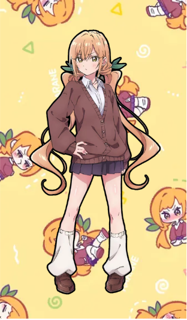
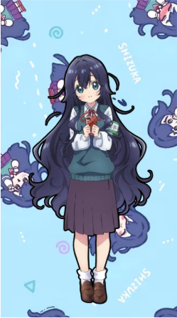
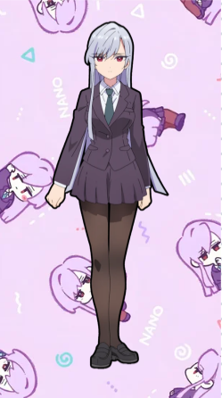
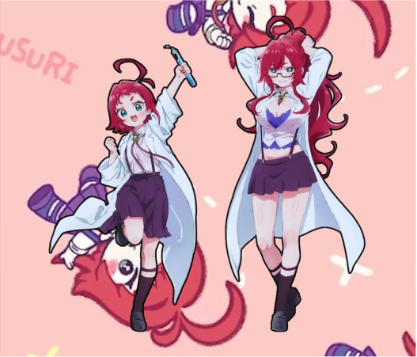
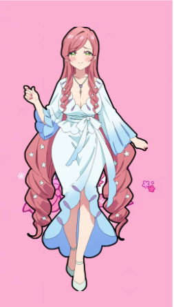
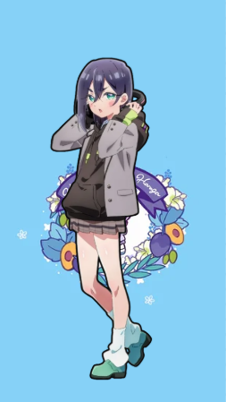
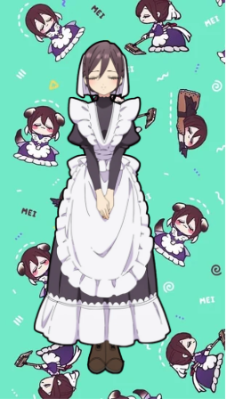
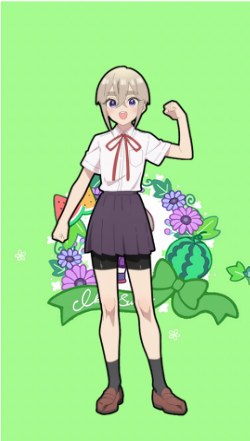
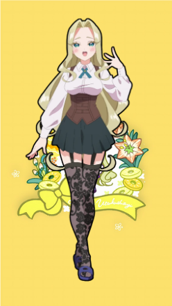
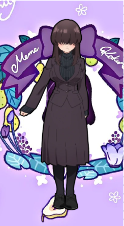

Kimi no Koto ga Dai Dai Dai Dai Daisuki na 100-nin no Kanojo 💕
Kimi no Koto ga Dai Dai Dai Dai Daisuki na 100-nin no Kanojo, también conocida como 100 Kanojo o The 100 Girlfriends Who Really, Really, Really, Really, Really Love You, es una comedia romántica creada por Rikito Nakamura e ilustrada por Yukiko Nozawa.
La serie comenzó su publicación el 26 de diciembre de 2019 en la revista Weekly Young Jump. Su historia sigue a Rentaro Aijo, un estudiante que descubre que está destinado a encontrarse con cien almas gemelas.
Aunque su adaptación al anime debutó a finales de 2023, fue durante los primeros meses de 2025, con el estreno de su segunda temporada, cuando la franquicia alcanzó una enorme popularidad internacional en internet.
Esta página funciona como una encuesta de popularidad para votar por tu Kanojo favorita.
Dulce, romántica y una de las primeras almas gemelas de Rentaro.

Tsundere de carácter fuerte que oculta sus verdaderos sentimientos.

Tímida amante de los libros que se comunica mediante citas literarias.

Inteligente y racional, siempre busca la solución más eficiente.

Científica brillante famosa por sus medicinas experimentales.

Madre de Hakari y empresaria poderosa con personalidad peculiar.

Apasionada por la comida y siempre lista para comer algo delicioso.

Sirvienta perfecta, disciplinada y extremadamente leal.

Deportista incansable que nunca se rinde ante ningún desafío.

Obsesionada con la belleza y con lucir perfecta en todo momento.

Reservada y tímida, intenta pasar desapercibida siempre que puede.
Hakari: 0 votos
Karane: 0 votos
Shizuka: 0 votos
Nano: 0 votos
Kusuri: 0 votos
Hahari: 0 votos
Kurumi: 0 votos
Mei: 0 votos
Iku: 0 votos
Mimimi: 0 votos
Meme: 0 votos